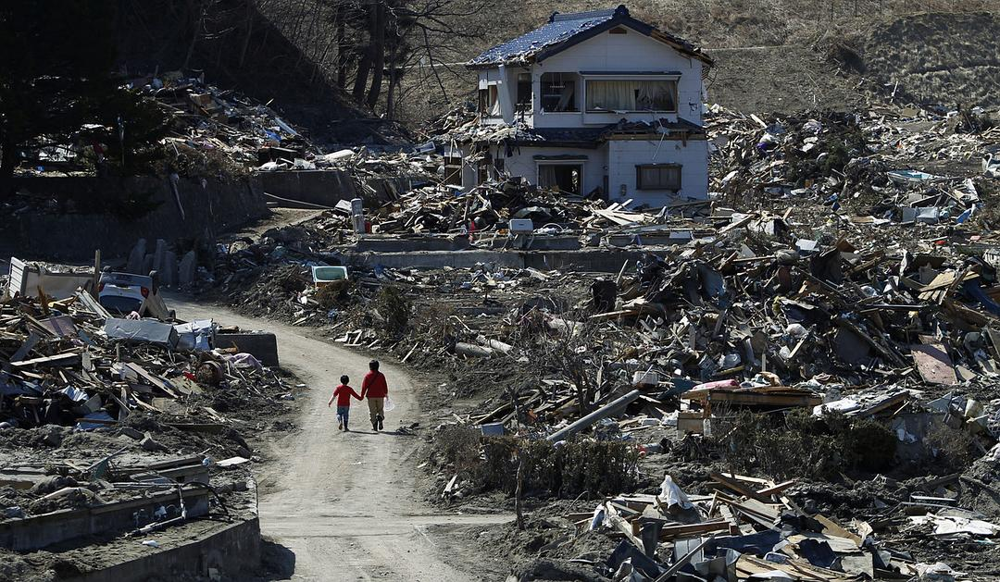

Global Earthquake in 2020

In 2020, more than 90,000 earthquakes occurred all over the world. The maximum magnitude is 7.8 and the minimum magnitude is only 0.3.
<- The pie chart on the left presents the percentage of different magnitude types in 2020. The highest percentage of magnitude type is ML (local earthquake) and it is almost half of the total.
-> The bar chart on the right shows the number of earthquakes of different magnitude types that occurred in 2020. The most frequant magnitude type of earthquakes is ML and it occurred more than 40,000 times in 2020.
<- As shown in the bubble chart on the left, M magnitude type of earthquakes lead to the deepest earthquakes. At the same time, MW magnitude type of earthquakes can cause a relatively deep earthquake with the highest magnitude.
-> The bar chart on the right presents the quantity of different magnitude type earthquakes over time. As shown in the chart, most earthquakes are caused by ML magnitude type of earthquake every single month.
This visualisation is created by Junze Zeng . The datasource is from https://www.kaggle.com/beksultankarimov/global-earthquakes-2020-clean.